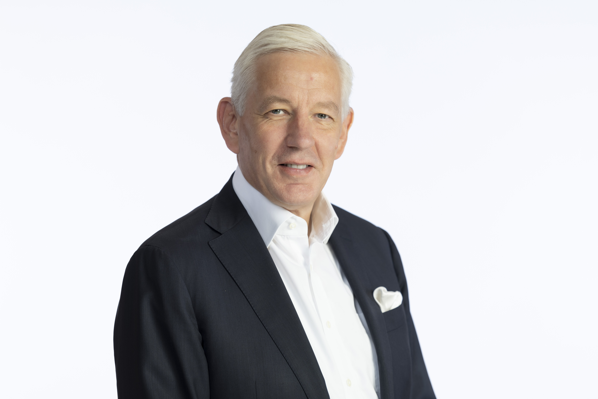

Society & Culture
Bridging Lives and Lessons: Education, Everyday Experience, and Understanding Between China and the U.S.
Guest: Peter Hessler (何伟)
Acclaimed author offering a ground-level perspective on how ordinary lives illuminate broader social change.
Society & History
Complexity Beyond Tension: Challenges and Opportunities in China Studies
Guest: Michael A. Szonyi (宋怡明)
Frank Wen-Hsiung Wu Professor of Chinese History and former Director of Fairbank Center at Harvard University

Business & Economics
Leading Through Complexity: Insights from McKinsey to the Embassy in Beijing
Guest: Dominic Barton (鲍达民)
Former Global Managing Partner of McKinsey & Company and former Canada’s Ambassador to China
Geopolitics
Strategic Competition or Managed Coexistence: The Future of U.S.–China Relations under Trump 2.0
Guest: Jake Sullivan
Former National Security Advisor to President Biden and the Kissinger Professor of the Practice of Statecraft and World Order at Harvard Kennedy School of Government